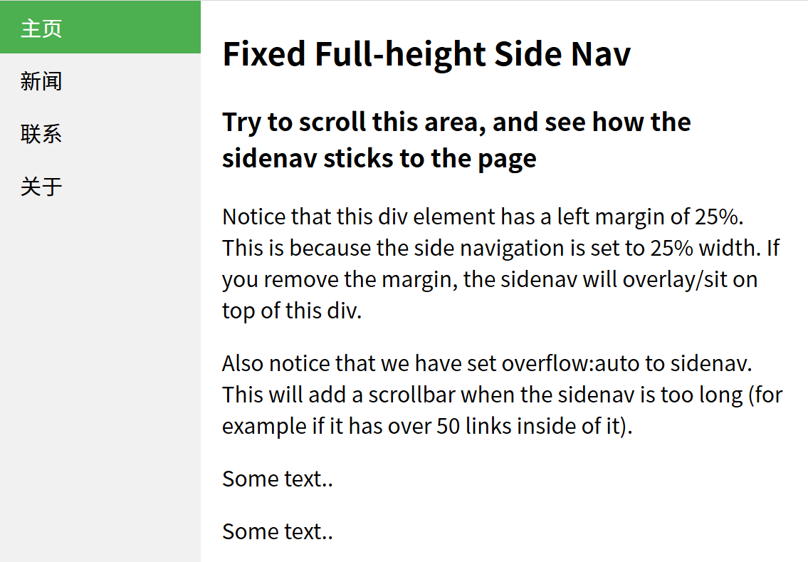

7.3
约 5013 个字 490 行代码 2 张图片 预计阅读时间 23 分钟
CSS 布局 - Overflow
CSS overflow 属性用于控制内容溢出元素框时显示的方式。
CSS overflow 属性可以控制内容溢出元素框时在对应的元素区间内添加滚动条。
overflow属性有以下值：
| 值 | 描述 |
|---|---|
| visible | 默认值。内容不会被修剪，会呈现在元素框之外。 |
| hidden | 内容会被修剪，并且其余内容是不可见的。 |
| scroll | 内容会被修剪，但是浏览器会显示滚动条以便查看其余的内容。 |
| auto | 如果内容被修剪，则浏览器会显示滚动条以便查看其余的内容。 |
| inherit | 规定应该从父元素继承 overflow 属性的值。 |
注意: overflow 属性只工作于指定高度的块元素上。
注意: 在 OS X Lion ( Mac 系统) 系统上，滚动条默认是隐藏的，使用的时候才会显示 (设置 "overflow:scroll" 也是一样的)。
overflow: visible
默认情况下，overflow 的值为 visible， 意思是内容溢出元素框：
比如：

CSS Float(浮动)
什么是 CSS Float
CSS 的 Float（浮动），会使元素向左或向右移动，其周围的元素也会重新排列。
Float（浮动），往往是用于图像，但它在布局时一样非常有用。
元素怎样浮动
元素的水平方向浮动，意味着元素只能左右移动而不能上下移动。
一个浮动元素会尽量向左或向右移动，直到它的外边缘碰到包含框或另一个浮动框的边框为止。
浮动元素之后的元素将围绕它。
浮动元素之前的元素将不会受到影响。
如果图像是右浮动，下面的文本流将环绕在它左边：
彼此相邻的浮动元素
如果你把几个浮动的元素放到一起，如果有空间的话，它们将彼此相邻。
在这里，我们对图片廊使用 float 属性：
清除浮动 - 使用 clear
元素浮动之后，周围的元素会重新排列，为了避免这种情况，使用 clear 属性。
clear 属性指定元素两侧不能出现浮动元素。
使用 clear 属性往文本中添加图片廊：
CSS 布局 - 水平 & 垂直对齐
元素居中对齐
要水平居中对齐一个元素(如 \<div>), 可以使用 margin: auto;。
设置到元素的宽度将防止它溢出到容器的边缘。
元素通过指定宽度，并将两边的空外边距平均分配：
注意: 如果没有设置 width 属性(或者设置 100%)，居中对齐将不起作用。
文本居中对齐
如果仅仅是为了文本在元素内居中对齐，可以使用 text-align: center;
提示: 更多文本对齐实例，请参阅 CSS 文本 章节
图片居中对齐
要让图片居中对齐, 可以使用 margin: auto; 并将它放到 块 元素中:
左右对齐 - 使用定位方式
我们可以使用 position: absolute; 属性来对齐元素:
注释：绝对定位元素会被从正常流中删除，并且能够交叠元素。
提示: 当使用 position 来对齐元素时, 通常 \<body> 元素会设置 margin 和 padding 。 这样可以避免在不同的浏览器中出现可见的差异。
当使用 position 属性时，IE8 以及更早的版本存在一个问题。如果容器元素（在我们的案例中是 \<div class\="container">）设置了指定的宽度，并且省略了 !DOCTYPE 声明，那么 IE8 以及更早的版本会在右侧增加 17px 的外边距。这似乎是为滚动条预留的空间。当使用 position 属性时，请始终设置 !DOCTYPE 声明：
左右对齐 - 使用 float 方式
我们也可以使用 float 属性来对齐元素:
当像这样对齐元素时，对
元素的外边距和内边距进行预定义是一个好主意。这样可以避免在不同的浏览器中出现可见的差异。注意：如果子元素的高度大于父元素，且子元素设置了浮动，那么子元素将溢出，这时候你可以使用 "clearfix(清除浮动)" 来解决该问题。
我们可以在父元素上添加 overflow: auto; 来解决子元素溢出的问题:
垂直居中对齐 - 使用 padding
CSS 中有很多方式可以实现垂直居中对齐。 一个简单的方式就是头部顶部使用 padding:
如果要水平和垂直都居中，可以使用 padding 和 text-align: center:
垂直居中 - 使用 line-height
.center {
line-height: 200px;
height: 200px;
border: 3px solid green;
text-align: center;
}
/* 如果文本有多行，添加以下代码: */
.center p {
line-height: 1.5;
display: inline-block;
vertical-align: middle;
}
垂直居中 - 使用 position 和 transform
除了使用 padding 和 line-height 属性外,我们还可以使用 transform 属性来设置垂直居中:
transform 属性内容可以参阅 2D 翻转章节
CSS 组合选择符
CSS组合选择符包括各种简单选择符的组合方式。
在 CSS3 中包含了四种组合方式:
- 后代选择器(以空格 分隔)
- 子元素选择器(以大于 > 号分隔）
- 相邻兄弟选择器（以加号 + 分隔）
- 普通兄弟选择器（以波浪号 ～ 分隔）
后代选择器
后代选择器用于选取某元素的后代元素。
以下实例选取所有 \<p> 元素插入到 \<div> 元素中:
子元素选择器
与后代选择器相比，子元素选择器（Child selectors）只能选择作为某元素直接/一级子元素的元素。
以下实例选择了\<div>元素中所有直接子元素 \<p>*（可能
元素） ：
相邻兄弟选择器
相邻兄弟选择器（Adjacent sibling selector）可选择紧接在另一元素后的元素，且二者有相同父元素。
如果需要选择紧接在另一个元素后的元素，而且二者有相同的父元素，可以使用相邻兄弟选择器（Adjacent sibling selector）。
以下实例选取了所有位于 \<div> 元素后的第一个 \<p> 元素:
后续兄弟选择器
后续兄弟选择器选取所有指定元素之后的相邻兄弟元素。
以下实例选取了所有 \<div> 元素之后的所有相邻兄弟元素 \<p> :
CSS 伪类(Pseudo-classes)
CSS伪类是用来添加一些选择器的特殊效果。
语法
伪类的语法：
selector:pseudo-class {property:value;}
CSS类也可以使用伪类：
selector.class:pseudo-class {property:value;}
伪类和CSS类
伪类可以与 CSS 类配合使用：
如果在上面的例子的链接已被访问，它会显示为红色。
CSS :first-child 伪类
您可以使用 :first-child 伪类来选择父元素的第一个子元素。
匹配第一个 \<p> 元素
在下面的例子中，选择器匹配作为任何元素的第一个子元素的 \<p> 元素：
匹配所有\<p> 元素中的第一个 \<i> 元素
在下面的例子中，选择相匹配的所有\<p>元素的第一个 \<i> 元素
匹配所有作为第一个子元素的 \<p> 元素中的所有 \<i> 元素
在下面的例子中，选择器匹配所有作为元素的第一个子元素的 \<p> 元素中的所有 \<i> 元素：
CSS 伪元素
CSS 伪元素是一种特殊的选择器，它可以在不改变 HTML 结构的情况下对页面元素的特定部分进行样式设置。
CSS 伪元素是用来添加一些选择器的特殊效果。
常用的 CSS 伪元素有 ::before、::after、::first-line、::first-letter 等。
语法
伪元素的语法：
CSS 类也可以使用伪元素：
:first-line 伪元素
"first-line" 伪元素用于向文本的首行设置特殊样式。
在下面的例子中，浏览器会根据 "first-line" 伪元素中的样式对 p 元素的第一行文本进行格式化：
注意： "first-line" 伪元素只能用于块级元素。
注意： 下面的属性可应用于 "first-line" 伪元素：
- font properties 字体
- color properties 颜色
- background properties 背景
- word-spacing 单词间距
- letter-spacing 字母间距
- text-decoration 文本装饰 比如上划线下划线这种
- vertical-align 垂直对齐
- text-transform 文本转换 大小写这种
- line-height 行高
- clear 清除浮动
:first-letter 伪元素
"first-letter" 伪元素用于向文本的首字母设置特殊样式：
注意： "first-letter" 伪元素只能用于块级元素。
注意： 下面的属性可应用于 "first-letter" 伪元素：
- font properties
- color properties
- background properties
- margin properties 边距
- padding properties 内边距
- border properties 边框
- text-decoration
- vertical-align (only if "float" is "none")
- text-transform
- line-height
- float
- clear
伪元素和CSS类
伪元素可以结合CSS类：
上面的例子会使所有 class 为 article 的段落的首字母变为红色。
多个伪元素
可以结合多个伪元素来使用。
在下面的例子中，段落的第一个字母将显示为红色，其字体大小为 xx-large。第一行中的其余文本将为蓝色，并以小型大写字母显示。
段落中的其余文本将以默认字体大小和颜色来显示：
p:first-letter
{
color:#ff0000;
font-size:xx-large;
}
p:first-line
{
color:#0000ff;
font-variant:small-caps;
}
CSS - :before 伪元素
":before" 伪元素可以在元素的内容前面插入新内容。
下面的例子在每个 \<h1>元素前面插入一幅图片：
CSS - :after 伪元素
":after" 伪元素可以在元素的内容之后插入新内容。
下面的例子在每个 \<h1> 元素后面插入一幅图片：
所有CSS伪类/元素
| 选择器 | 示例 | 示例说明 |
|---|---|---|
| :link | a:link | 选择所有未访问链接 |
| :visited | a:visited | 选择所有访问过的链接 |
| :active | a:active | 选择正在活动链接 |
| :hover | a:hover | 把鼠标放在链接上的状态 |
| :focus | input:focus | 选择元素输入后具有焦点 |
| :first-letter | p:first-letter | 选择每个\<p> 元素的第一个字母 |
| :first-line | p:first-line | 选择每个\<p> 元素的第一行 |
| :first-child | p:first-child | 选择器匹配属于任意元素的第一个子元素的 \<p> 元素 |
| :before | p:before | 在每个\<p>元素之前插入内容 |
| :after | p:after | 在每个\<p>元素之后插入内容 |
| :lang(language) | p:lang(it) | 为\<p>元素的lang属性选择一个开始值 |
CSS 导航栏
导航栏\=链接列表
作为标准的 HTML 基础一个导航栏是必须的。
在我们的例子中我们将建立一个标准的 HTML 列表导航栏。
导航条基本上是一个链接列表，所以使用 \<ul> 和 \<li>元素非常有意义：
<ul>
<li><a href="#home">主页</a></li>
<li><a href="#news">新闻</a></li>
<li><a href="#contact">联系</a></li>
<li><a href="#about">关于</a></li>
</ul>
现在，让我们从列表中删除边距和填充：
例子解析：
- list-style-type:none - 移除列表前小标志。一个导航栏并不需要列表标记
- 移除浏览器的默认设置将边距和填充设置为0
上面的例子中的代码是垂直和水平导航栏使用的标准代码。
垂直导航栏
上面的代码，我们只需要 \<a>元素的样式，建立一个垂直的导航栏：
示例说明：
- display:block - 显示块元素的链接，让整体变为可点击链接区域（不只是文本），它允许我们指定宽度
- width:60px - 块元素默认情况下是最大宽度。我们要指定一个60像素的宽度
提示： 查看 完整样式的垂直导航栏的示例。
注意： 请务必指定 \<a>元素在垂直导航栏的的宽度。如果省略宽度，IE6可能产生意想不到的效果。
垂直导航条实例
创建一个简单的垂直导航条实例，在鼠标移动到选项时，修改背景颜色
ul {
list-style-type: none;
margin: 0;
padding: 0;
width: 200px;
background-color: #f1f1f1;
}
li a {
display: block;
color: #000;
padding: 8px 16px;
text-decoration: none;
}
/* 鼠标移动到选项上修改背景颜色 */
li a:hover {
background-color: #555;
color: white;
}
激活/当前导航条实例
在点击了选项后，我们可以添加 "active" 类来标注哪个选项被选中
创建链接并添加边框
可以在 \<li> or \<a> 上添加text-align:center 样式来让链接居中。
可以在 border \<ul> 上添加 border 属性来让导航栏有边框。如果要在每个选项上添加边框，可以在每个 \<li> 元素上添加border-bottom :
ul {
border: 1px solid #555;
}
li {
text-align: center;
border-bottom: 1px solid #555;
}
li:last-child {
border-bottom: none;
}
全屏高度的固定导航条
接下来我们创建一个左边是全屏高度的固定导航条，右边是可滚动的内容。
ul {
list-style-type: none;
margin: 0;
padding: 0;
width: 25%;
background-color: #f1f1f1;
height: 100%; /* 全屏高度 */
position: fixed;
overflow: auto; /* 如果导航栏选项多，允许滚动 */
}
效果如：

注意: 该实例可以在移动设备上使用。
水平导航栏
有两种方法创建横向导航栏。使用内联(inline) 或浮动(float) 的列表项。
这两种方法都很好，但如果你想链接到具有相同的大小，你必须使用浮动的方法。
内联列表项
建立一个横向导航栏的方法之一是指定元素， 下述代码是标准的内联:
实例解析：
- display:inline; - 默认情况下， <li> 元素是块元素。在这里，我们删除换行符之前和之后每个列表项，以显示一行。
提示: 查看 完整样式的水平导航栏的示例。
浮动列表项
在上面的例子中链接有不同的宽度。
对于所有的链接宽度相等，浮动 \<li>元素，并指定为 \<a>元素的宽度：
实例解析：
- float:left - 使用浮动块元素的幻灯片彼此相邻
- display:block - 显示块元素的链接，让整体变为可点击链接区域（不只是文本），它允许我们指定宽度
- width:60px - 块元素默认情况下是最大宽度。我们要指定一个60像素的宽度
提示: 查看 完全样式的横向导航栏的示例。
水平导航条实例
创建一个水平导航条，在鼠标移动到选项后修改背景颜色。
ul {
list-style-type: none;
margin: 0;
padding: 0;
overflow: hidden;
background-color: #333;
}
li {
float: left;
}
li a {
display: block;
color: white;
text-align: center;
padding: 14px 16px;
text-decoration: none;
}
/*鼠标移动到选项上修改背景颜色 */
li a:hover {
background-color: #111;
}
激活/当前导航条实例
在点击了选项后，我们可以添加 "active" 类来标准哪个选项被选中：
链接右对齐
将导航条最右边的选项设置右对齐 (float:right;)：
<ul>
<li><a href="#home">主页</a></li>
<li><a href="#news">新闻</a></li>
<li><a href="#contact">联系</a></li>
<li style="float:right"><a class="active" href="#about">关于</a></li>
</ul>
添加分割线
\<li> 通过 border-right 样式来添加分割线:
/* 除了最后一个选项(last-child) 其他的都添加分割线 */
li {
border-right: 1px solid #bbb;
}
li:last-child {
border-right: none;
}
固定导航条
可以设置页面的导航条固定在头部或者底部：
固定在头部：
固定在底部：
注意: 该实例可以在移动设备上使用。
灰色水平导航条
更多实例
- 响应式顶部导航 - 如何使用 CSS3 媒体查询来创建一个响应式导航。
- 响应式边栏导航 - 如何使用 CSS3 媒体查询来创建一个边栏导航。
- 导航下拉菜单 - 在导航条内部设置下拉菜单
- 导航图标 - 使用图标作为导航栏的选项
CSS 下拉菜单
使用 CSS 创建一个鼠标移动上去后显示下拉菜单的效果。
基本下拉菜单
当鼠标移动到指定元素上时，会出现下拉菜单
<style>
.dropdown {
position: relative;
display: inline-block;
}
.dropdown-content {
display: none;
position: absolute;
background-color: #f9f9f9;
min-width: 160px;
box-shadow: 0px 8px 16px 0px rgba(0,0,0,0.2);
padding: 12px 16px;
}
.dropdown:hover .dropdown-content {
display: block;
}
</style>
<div class="dropdown">
<span>鼠标移动到我这！</span>
<div class="dropdown-content">
<p>菜鸟教程</p>
<p>www.runoob.com</p>
</div>
</div>
实例解析
HTML 部分：
我们可以使用任何的 HTML 元素来打开下拉菜单，如：\<span>, 或 a \<button> 元素。
使用容器元素 (如： \<div>) 来创建下拉菜单的内容，并放在任何你想放的位置上。
使用 \<div> 元素来包裹这些元素，并使用 CSS 来设置下拉内容的样式。
CSS 部分：
.dropdown 类使用 position:relative, 这将设置下拉菜单的内容放置在下拉按钮 (使用 position:absolute) 的右下角位置。
.dropdown-content 类中是实际的下拉菜单。默认是隐藏的，在鼠标移动到指定元素后会显示。 注意 min-width 的值设置为 160px。你可以随意修改它。 注意: 如果你想设置下拉内容与下拉按钮的宽度一致，可设置 width 为 100% ( overflow:auto 设置可以在小尺寸屏幕上滚动)。
我们使用 box-shadow 属性让下拉菜单看起来像一个"卡片"。
:hover 选择器用于在用户将鼠标移动到下拉按钮上时显示下拉菜单。
下拉菜单
创建下拉菜单，并允许用户选取列表中的某一项
这个实例类似前面的实例，当我们在下拉列表中添加了链接，并设置了样式：
<style>
/* 下拉按钮样式 */
.dropbtn {
background-color: #4CAF50;
color: white;
padding: 16px;
font-size: 16px;
border: none;
cursor: pointer;
}
/* 容器 <div> - 需要定位下拉内容 */
.dropdown {
position: relative;
display: inline-block;
}
/* 下拉内容 (默认隐藏) */
.dropdown-content {
display: none;
position: absolute;
background-color: #f9f9f9;
min-width: 160px;
box-shadow: 0px 8px 16px 0px rgba(0,0,0,0.2);
}
/* 下拉菜单的链接 */
.dropdown-content a {
color: black;
padding: 12px 16px;
text-decoration: none;
display: block;
}
/* 鼠标移上去后修改下拉菜单链接颜色 */
.dropdown-content a:hover {background-color: #f1f1f1}
/* 在鼠标移上去后显示下拉菜单 */
.dropdown:hover .dropdown-content {
display: block;
}
/* 当下拉内容显示后修改下拉按钮的背景颜色 */
.dropdown:hover .dropbtn {
background-color: #3e8e41;
}
</style>
<div class="dropdown">
<button class="dropbtn">下拉菜单</button>
<div class="dropdown-content">
<a href="#">菜鸟教程 1</a>
<a href="#">菜鸟教程 2</a>
<a href="#">菜鸟教程 3</a>
</div>
</div>
下拉内容对齐方式
float:left;
这个效果是在左边
float:right;
这个效果是在右边
如果你想设置右浮动的下拉菜单内容方向是从右到左，而不是从左到右，可以添加以下代码 right: 0;
CSS 提示工具(Tooltip)
本文我们为大家介绍如何使用 HTML 与 CSS 来创建提示工具。
提示工具在鼠标移动到指定元素后触发，先看以下四个实例：
基础提示框(Tooltip)
提示框在鼠标移动到指定元素上显示：
<style>
/* Tooltip 容器 */
.tooltip {
position: relative;
display: inline-block;
border-bottom: 1px dotted black; /* 悬停元素上显示点线 */
}
/* Tooltip 文本 */
.tooltip .tooltiptext {
visibility: hidden;
width: 120px;
background-color: black;
color: #fff;
text-align: center;
padding: 5px 0;
border-radius: 6px;
/* 定位 */
position: absolute;
z-index: 1;
}
/* 鼠标移动上去后显示提示框 */
.tooltip:hover .tooltiptext {
visibility: visible;
}
</style>
<div class="tooltip">鼠标移动到这
<span class="tooltiptext">提示文本</span>
</div>
实例解析
HTML) 使用容器元素 (like \<div>) 并添加 "tooltip" 类。在鼠标移动到 \<div> 上时显示提示信息。
提示文本放在内联元素上(如 \<span>) 并使用class="tooltiptext" 。
CSS) tooltip 类使用 position:relative, 提示文本需要设置定位值 position:absolute。 注意: 接下来的实例会显示更多的定位效果。
tooltiptext 类用于实际的提示文本。模式是隐藏的，在鼠标移动到元素显示 。设置了一些宽度、背景色、字体色等样式。
CSS3 border-radius 属性用于为提示框添加圆角。
:hover 选择器用于在鼠标移动到到指定元素 \<div> 上时显示的提示。
定位提示工具
以下实例中，提示工具显示在指定元素的右侧(left:105% ) 。
注意 top:-5px 同于定位在容器元素的中间。使用数字 5 因为提示文本的顶部和底部的内边距（padding）是 5px。
如果你修改 padding 的值，top 值也要对应修改，这样才可以确保它是居中对齐的。
在提示框显示在左边的情况也是这个原理。
显示在右侧：
显示在左侧：
如果你想要提示工具显示在头部和底部。我们需要使用 margin-left 属性，并设置为 -60px。 这个数字计算来源是使用宽度的一半来居中对齐，即： width/2 (120/2 = 60)。
显示在头部：
.tooltip .tooltiptext {
width: 120px;
bottom: 100%;
left: 50%;
margin-left: -60px; /* 使用一半宽度 (120/2 = 60) 来居中提示工具 */
}
显示在底部：
.tooltip .tooltiptext {
width: 120px;
top: 100%;
left: 50%;
margin-left: -60px; /* 使用一半宽度 (120/2 = 60) 来居中提示工具 */
}
添加箭头
我们可以用CSS 伪元素 ::after 及 content 属性为提示工具创建一个小箭头标志，箭头是由边框组成的，但组合起来后提示工具像个语音信息框。
以下实例演示了如何为显示在顶部的提示工具添加底部箭头：
顶部提示框/底部箭头：
.tooltip .tooltiptext::after {
content: " ";
position: absolute;
top: 100%; /* 提示工具底部 */
left: 50%;
margin-left: -5px;
border-width: 5px;
border-style: solid;
border-color: black transparent transparent transparent;
}
实例解析
在提示工具内定位箭头: top: 100% , 箭头将显示在提示工具的底部。left: 50% 用于居中对齐箭头。
注意：border-width 属性指定了箭头的大小。如果你修改它，也要修改 margin-left 值。这样箭头才能居中显示。
border-color 用于将内容转换为箭头。设置顶部边框为黑色，其他是透明的。如果设置了其他的也是黑色则会显示为一个黑色的四边形。
以下实例演示了如何在提示工具的头部添加箭头，注意设置边框颜色：
底部提示框/顶部箭头：
.tooltip .tooltiptext::after {
content: " ";
position: absolute;
bottom: 100%; /* 提示工具头部 */
left: 50%;
margin-left: -5px;
border-width: 5px;
border-style: solid;
border-color: transparent transparent black transparent;
}
以下两个实例是左右两边的箭头实例：
右侧提示框/左侧箭头：
.tooltip .tooltiptext::after {
content: " ";
position: absolute;
top: 50%;
right: 100%; /* 提示工具左侧 */
margin-top: -5px;
border-width: 5px;
border-style: solid;
border-color: transparent black transparent transparent;
}
右侧就是改一个left
CSS 图片廊
CSS 图像透明/不透明
使用CSS很容易创建透明的图像。
注意： CSS Opacity属性是W3C的CSS3建议的一部分。
实例1 - 创建一个透明图像
CSS3中属性的透明度是 opacity。
用这个方式就可以创建一个有透明度的图像
实例2 - 图像的透明度 - 悬停效果
将鼠标移到图像上：
CSS样式：
img
{
opacity:0.4;
filter:alpha(opacity=40); /* IE8 及其更早版本 */
}
img:hover
{
opacity:1.0;
filter:alpha(opacity=100); /* IE8 及其更早版本 */
}
第一个CSS块是和例1中的代码类似。此外，我们还增加了当用户将鼠标悬停在其中一个图像上时发生什么。在这种情况下，当用户将鼠标悬停在图像上时，我们希望图片是清晰的。
此CSS是：opacity=1.
IE8和更早版本使用： filter:alpha(opacity=100) .
当鼠标指针远离图像时，图像将重新具有透明度。
实例3 - 透明的盒子中的文字
源代码如下：
<!DOCTYPE html>
<html>
<head>
<meta charset="utf-8">
<style>
div.background
{
width:500px;
height:250px;
background:url(https://www.runoob.com/images/klematis.jpg) repeat;
border:2px solid black;
}
div.transbox
{
width:400px;
height:180px;
margin:30px 50px;
background-color:#ffffff;
border:1px solid black;
opacity:0.6;
filter:alpha(opacity=60); /* IE8 及更早版本 */
}
div.transbox p
{
margin:30px 40px;
font-weight:bold;
color:#000000;
}
</style>
</head>
<body>
<div class="background">
<div class="transbox">
<p>这些文本在透明框里。这些文本在透明框里。这些文本在透明框里。这些文本在透明框里。这些文本在透明框里。这些文本在透明框里。这些文本在透明框里。这些文本在透明框里。这些文本在透明框里。这些文本在透明框里。这些文本在透明框里。这些文本在透明框里。这些文本在透明框里。
</p>
</div>
</div>
</body>
</html>
首先，我们创建一个固定的高度和宽度的div元素，带有一个背景图片和边框。然后我们在第一个div内部创建一个较小的div元素。 这个div也有一个固定的宽度，背景颜色，边框 - 而且它是透明的。透明的div里面，我们在P元素内部添加一些文本。